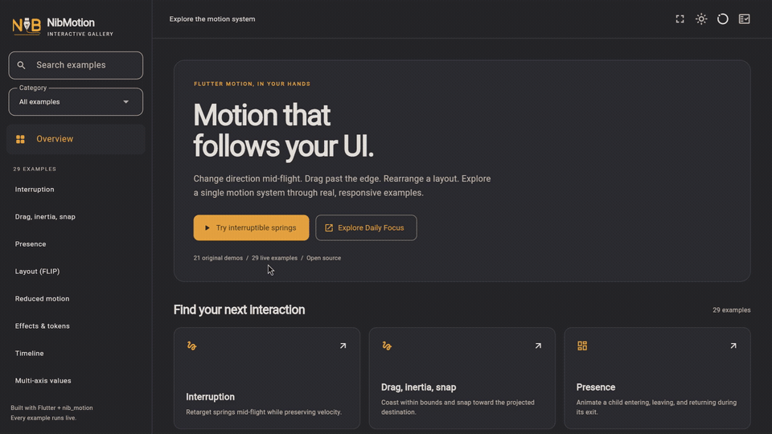
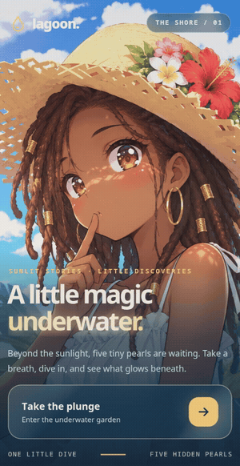

Interactive Motion Gallery
Springs, drag, layout, presence and text. The existing gallery recording is retained unchanged.
Open MP4 · 40.1 seconds · 1920 × 1080 · H.264 · 30 FPS
Gallery README loop

Open GIF · 11.78 seconds · 960 × 540 · 845,428 bytes
Poster · Metadata · Example audit
Water Surface in Action
Lagoon in portrait: tap, swipe, dive and return. Linux/Impeller capture with experimental water refraction.
Open MP4 · 24 seconds · 494 × 960 · H.264 · 30 FPS
Water README loop

Open GIF · 10 seconds · 300 × 582 · 3,650,310 bytes
Poster · Metadata · Capture and app assessment